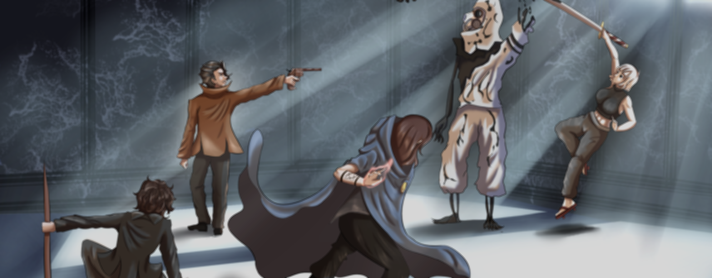

Referencia de Combate:
Por outro lado, saindo do estilo isométrico, a forma de combate será alterada, inspirando-se no jogo XCOM 2. Durante as batalhas, a câmera deixará a posição isométrica para assumir a perspectiva em terceira pessoa, proporcionando uma experiência mais imersiva e dinâmica.
Referencia de Cinematic:
Como muitos jogos contam com cinematics para destacar momentos dramáticos ou apresentar personagens e eventos, essa animação não será diferente. Planejamos utilizar animação por puppet, empregando o After Effects para dar vida às ilustrações, criando uma sensação de movimento mesmo com imagens estáticas. Um excelente exemplo desse estilo de animação pode ser visto no anime Kengan Ashura, que utiliza essa técnica de forma marcante e eficaz.
SOBRE NÓS
Criador
Italo João Silva Araujo, concept artist e modelador 3D, conhecido pelo pseudônimo Inkteiro, é o criador de Vas Caelastis - Animated Series. Além de idealizador, ele desempenha os papéis de narrador, diretor, roteirista e produtor do projeto. O foco principal de Vas Caelastis não está na criação de um novo sistema de RPG, mas sim em contar histórias de maneiras variadas e envolventes, transformando sua campanha de RPG de mesa em uma série animada.
Diretor de Arte
Felipe José, Ilustrador, animador, quadrinista e artista 3d, conhecido pelo pseudonimo Felpzim é responsavel pela direção de arte do projeto Vas Caelastis. Junto disso ele é o treinador oficial dos intregantes artistas para que se mantenha um padrão de artes para que não ocorra divergencia de traços ou estilo quando ocorrer a animação.
Contato para trabalho
Contato de Italo
Contato de Felipe
Contato do Projeto
Apoia-se
O projeto Vas Caelastis - Animated Series convida você a fazer parte de uma jornada incrível, que transforma uma campanha de RPG de mesa em uma série animada cheia de personalidade. Criado com base no sistema próprio de RPG, esse projeto mergulha em um universo onde todas as divindades coexistem, enquanto o cenário pernambucano e trilhas sonoras regionais trazem uma identidade única. Para realizar esse sonho, estamos contando com a sua ajuda no Apoia-se, onde incríveis recompensas aguardam nossos apoiadores. Além disso, o projeto também está no Catarse, expandindo ainda mais as possibilidades de contribuição.
Recompensas
Ao apoiar o projeto, você pode garantir itens únicos e memoráveis:
Livro do Sistema de RPG: Explore todas as regras e mecânicas do sistema de Vas Caelastis, ideal para mestres e jogadores que buscam experiências dinâmicas.
Estatuetas de Personagens:
4 estatuetas dos protagonistas
2 estatuetas dos principais antagonistas;
Quadrinhos com Histórias Antecedentes: Descubra mais sobre o universo de Vas Caelastis em dois quadrinhos exclusivos que expandem a narrativa.
Adereços Icônicos dos Personagens:
O sobretudo de Dante;
A katana de Ruth;
Colares combinando de Estella e Dinora.
Materiais para RPG:
Proches da campanha, sets de dados personalizados, e uma campanha pronta para jogar, levando você diretamente ao mundo de Vas Caelastis. Cartazes Impressos: Artes exclusivas para decorar seu espaço com o estilo único da série.